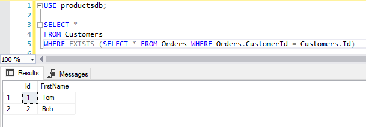
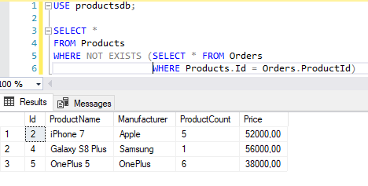

Оператор EXISTS
Оператор EXISTS позволяет проверить, возвращает ли подзапрос какое-либо значение. Как правило, этот оператор используется для индикации того, что какая-либо строка удовлетворяет условию. То есть фактически оператор EXISTS не возвращает строки, а лишь указывает, что в базе данных есть как минимум одна строка, которые соответствует данному запросу. Поскольку возвращения набора строк не происходит, то подзапросы с подобным оператором выполняются довольно быстро.
Применение оператора имеет следующий формальный синтаксис:
1 | WHERE [NOT] EXISTS (подзапрос) |
Например, найдем всех покупателей из таблицы Customer, которые делали заказы:
1 2 3 4 | SELECT *FROM CustomersWHERE EXISTS (SELECT * FROM Orders WHERE Orders.CustomerId = Customers.Id) |

Другой пример - найдем все товары из таблицы Products, на которые не было заказов в таблице Orders:
1 2 3 | SELECT *FROM ProductsWHERE NOT EXISTS (SELECT * FROM Orders WHERE Products.Id = Orders.ProductId) |

Стоит отметить, что для получения подобного результата ы могли бы использовать и опеатор IN:
1 2 3 | SELECT *FROM ProductsWHERE Id NOT IN (SELECT ProductId FROM Orders) |
Но поскольку при применении EXISTS не происходит выборка строк, то его использование более оптимально и эффективно, чем использование оператора IN.